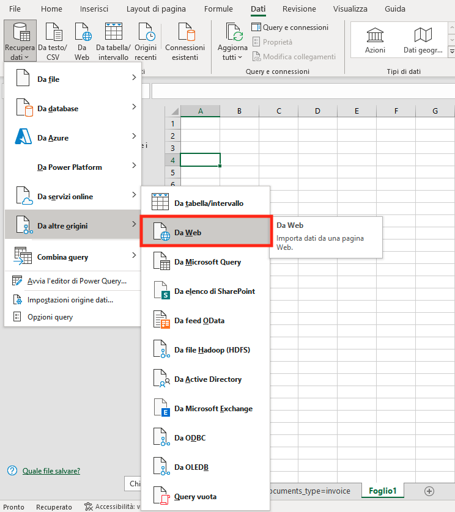
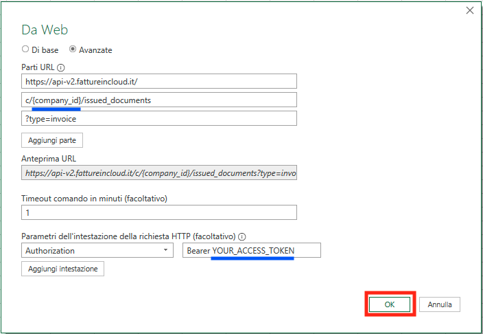
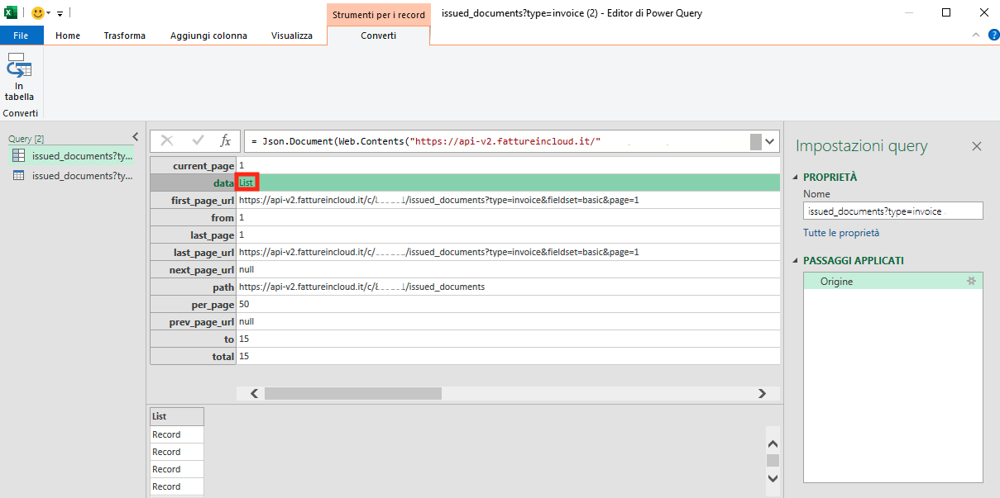
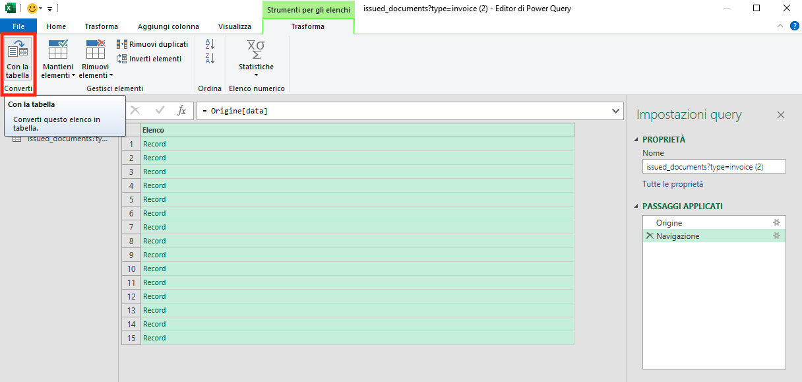
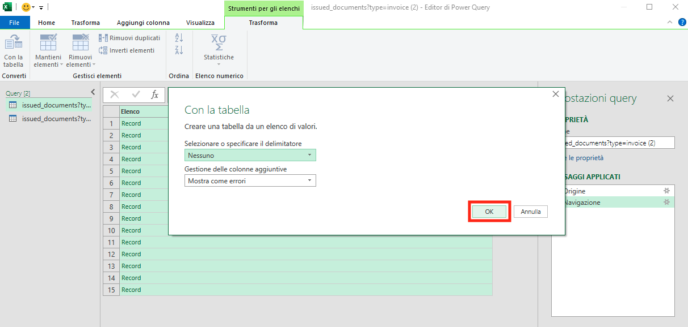
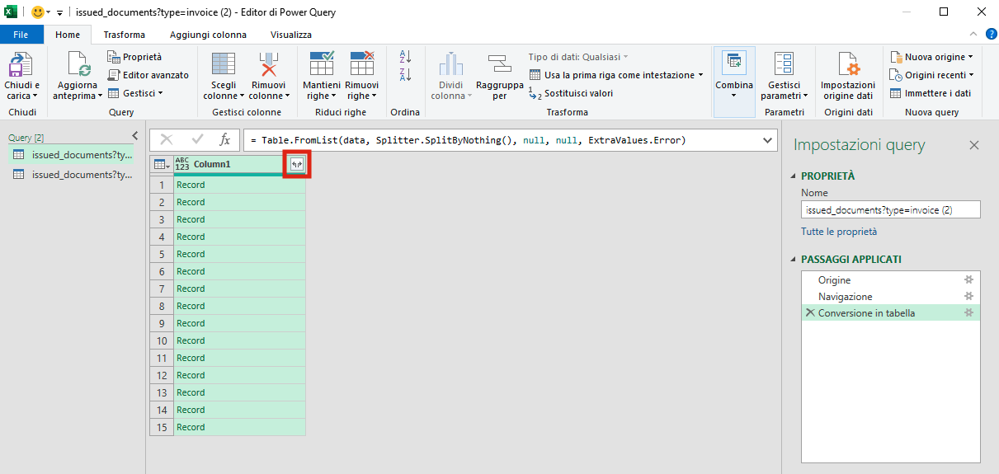
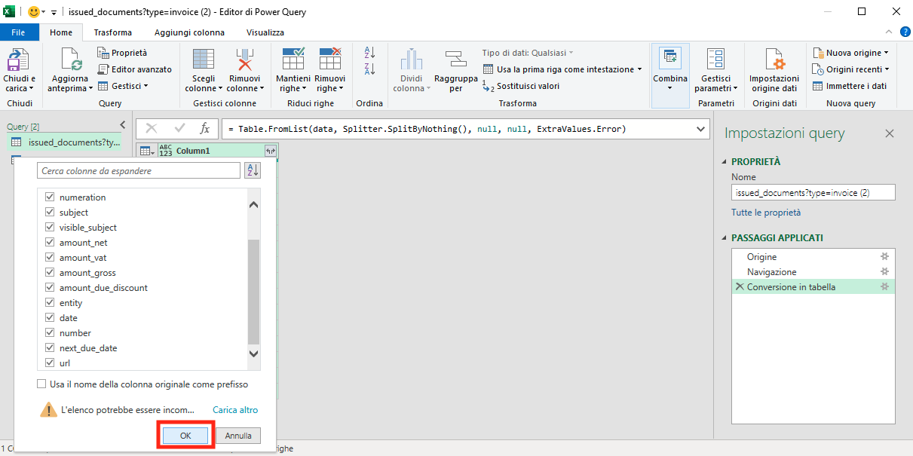
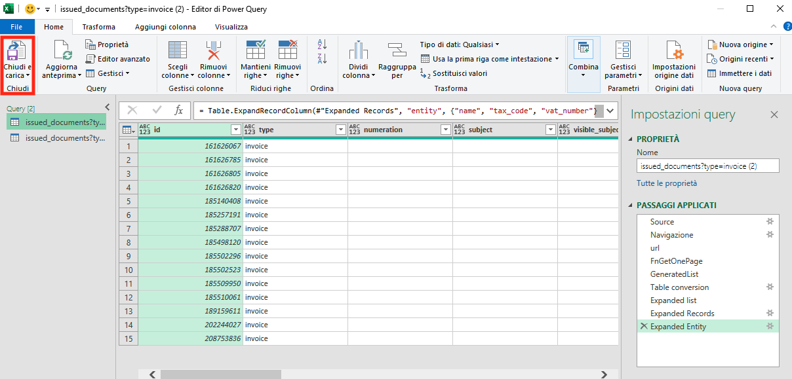
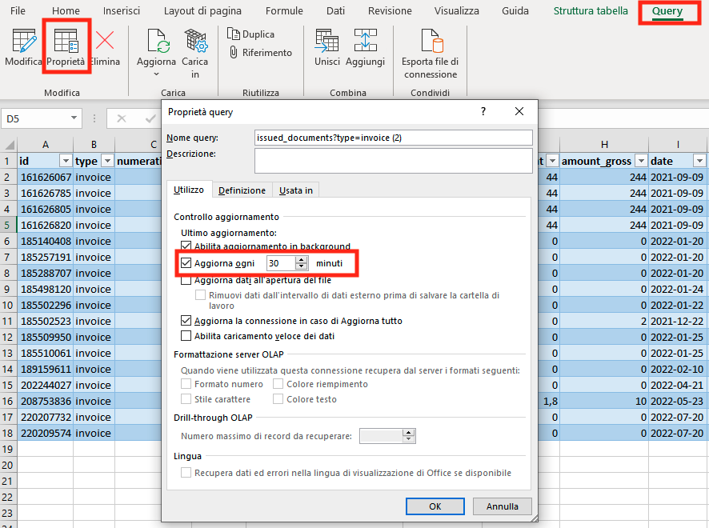
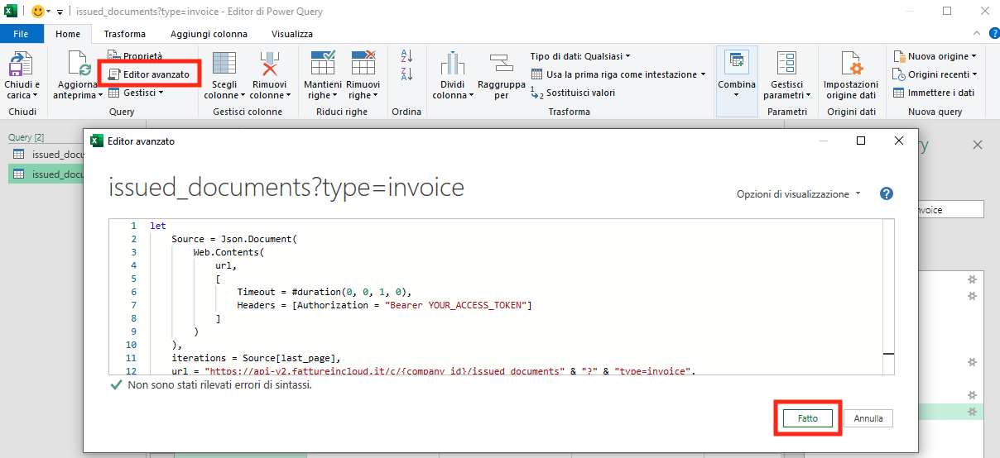

Excel Power Query Quickstart
In this guide, we'll explain how to use Power Query to load contents from our APIs into Microsoft Excel.
:open_book: List Example
In this example, we will load our invoices list using the List Issued Documents method, but you can adapt this guide to using it with the API method you need.
 Step one: Setup the Data Source
Step one: Setup the Data Source
:::tip Retrieve your Company ID!
In this example, we'll suppose you have to manage just one Company, so we simply inserted its ID directly in the code. If instead, you need to be able to manage multiple companies, you'll need to retrieve the ID of the current company in some way. Check the Company-scoped Methods page for more info.
:::
First, we must select the Import from Web functionality as shown below:

Then we need to define the URL that will be contacted by Power Query. The List Issued Documents method is accessible to the following URL:
https://api-v2.fattureincloud.it/c/\{company_id\}/issued_documents
additionally, it requires to define some parameters as Query String (e.g. the "?type=invoice" part), but you can substitute it with the endpoint of the method you want. Please, make sure to replace the {company_id} placeholder with your company ID.
Our APIs require authentication, so we also need to set the Authorization header as shown below. Remember to replace the "YOURACCESS_TOKEN" placeholder with your actual _Access Token; you can obtain a valid one following this procedure.

 Step Two: Extract the data
Step Two: Extract the data
If you inserted the connection parameters correctly, Excel should already have retrieved the method response from our APIs.
Now, we have to extract the list of invoices from the API response:

and then convert the result into a Table like shown below:
 
Once obtained the table, we must extract the records of the invoices using the Record Extractor:

then we must select the fields that we are interested in from the menu:

And finally we can export the records to your sheet:

 Step Three: Enable auto update
Step Three: Enable auto update
Using Power Query it is possible to activate periodic updates of the data, selecting the query -> properties -> check the 'update every x minutes' functionality as shown below.

 Step Four: What about pagination?
Step Four: What about pagination?
The List Issued Documents response is paginated, this means that the results will be split into different sets; each set will contain a certain number of records up to the maximum value as explained on the dedicated page. Until now we just fetched the first page from the API, and this means that to retrieve the whole result we need to manage pagination.
Unluckily it is not trivial, so you have to open advanced the Power Query editor and paste in the following code
let
Source = Json.Document(
Web.Contents(
url,
[
Timeout = #duration(0, 0, 1, 0),
Headers = [Authorization = "Bearer YOUR_ACCESS_TOKEN"]
]
)
),
iterations = Source[last_page],
url = "https://api-v2.fattureincloud.it/c/\{company_id\}/issued_documents" & "?" & "type=invoice",
FnGetOnePage =
(url) as record =>
let
Source = Json.Document(
Web.Contents(
url,
[
Timeout = #duration(0, 0, 1, 0),
Headers = [Authorization = "Bearer YOUR_ACCESS_TOKEN"]
]
)
),
data = try Source[data] otherwise null,
next = try Source[next_page_url] otherwise null,
res = [Data = data, Next = next]
in
res,
GeneratedList =
List.Generate(
() => [i = 0, res = FnGetOnePage(url)],
each[i] < iterations and[res][Data] <> null,
each[i = [i] + 1, res = FnGetOnePage([res][Next])],
each[res][Data]),
#"Table conversion" = Table.FromList(GeneratedList, Splitter.SplitByNothing(), null, null, ExtraValues.Error),
#"Expanded list" = Table.ExpandListColumn(#"Table conversion", "Column1"),
#"Expanded Records" = Table.ExpandRecordColumn(#"Expanded list", "Column1", {
"id",
"type",
"numeration",
"subject",
"visible_subject",
"amount_net",
"amount_vat",
"amount_gross",
"date",
"number",
"next_due_date",
"url",
"entity"
}, {
"id",
"type",
"numeration",
"subject",
"visible_subject",
"amount_net",
"amount_vat",
"amount_gross",
"date",
"number",
"next_due_date",
"url",
"entity"
}),
#"Expanded Entity" = Table.ExpandRecordColumn(#"Expanded Records", "entity", {
"name",
"tax_code",
"vat_number"
}, {
"client.name",
"client.tax_code",
"client.vat_number"
})
in
#"Expanded Entity"

The code above loops all the pages of the response and aggregates the results; additionally, it extracts the entity field to show the client name, tax_code and vat_number. To use this code you mustreplace the placeholders 'YOUR_ACCESS_TOKEN' and {company_id} as explained previously.
Please, notice that this will increment the number of API requests executed, so you must be sure to not hit the quota limits to avoid the related errors.